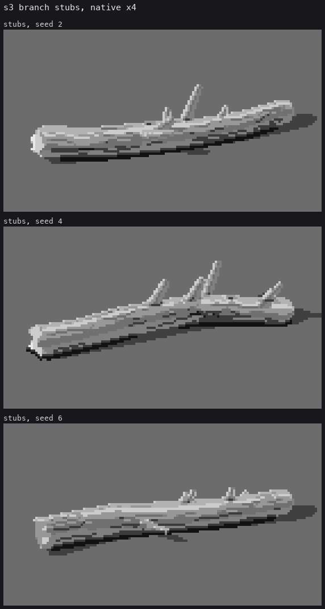
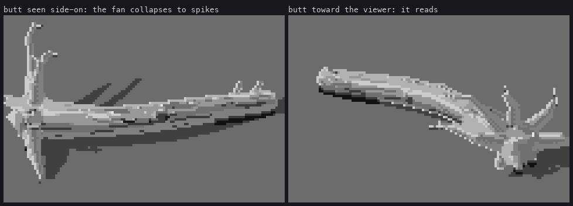
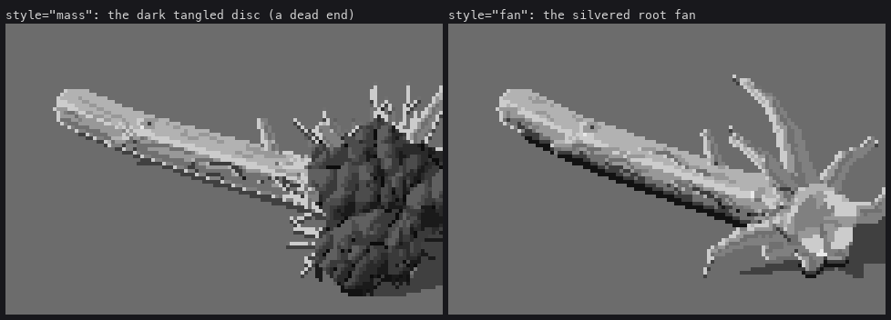
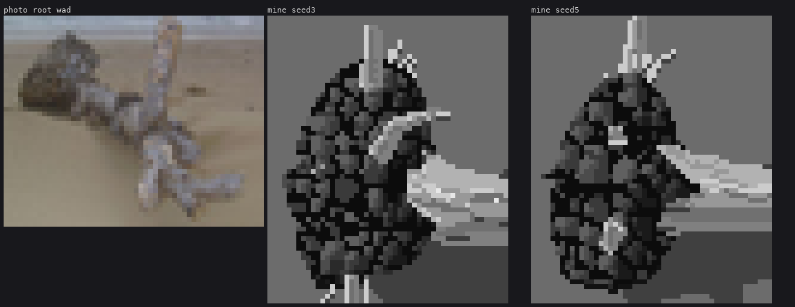

7. Stubs and the root fan
Trigger: a broken branch on a trunk (a stub); the butt of a tree that came down whole (a root wad).
Limbs are cylinders with their own axes
A stub and a root are the same primitive: a round cone, smooth-unioned into the trunk. Each is a limb in Log.limbs, and lesson 2's Log.local returns its axis for the pixels on it, so a stub carries the five classes round its own length, lit on its own sun side.
# code/geo.py, make_log: stubs are broken branches, mostly on the upper half (downward ones
# broke off or are buried), tilted toward the top end as branches grow
for _ in range(n_stubs):
st.append((rng.uniform(0.3, 0.92), # position along the log
rng.uniform(-1.6, 1.6), # angle round it, from 'up'
r * rng.uniform(0.4, 2.2), # length
rng.uniform(0.28, 0.5), # radius, as a fraction of the trunk's
rng.uniform(0.3, 0.9))) # tilt toward the tip
# code/geo.py, Log.sdf
for (a, b, r1, r2, kind) in self.limbs:
ds = cone_culled(p, d, a, b, r1, r2, r1 * 0.5)
parts = np.where(ds < d, 3, parts)
d = smin(d, ds, r1 * 0.5) # the collar: a smooth union, not a peg

cone_culled evaluates the round-cone SDF only where its bounding sphere could matter, which halved the render time once logs had a dozen limbs.
The root fan
A root wad on a river bar has been washed clean. It is the same silvered wood as the trunk, which flares into a handful of thick roots that radiate, twist and taper, with big voids between them where the gravel shows through.
# code/geo.py
def _make_fan(self, rng, c, out, r0, e1, e2):
rw = self.rootwad
n = max(rw.get('n', 9), 8)
base_phi = rng.uniform(0, 2 * np.pi)
for i in range(n):
phi = base_phi + (i + rng.uniform(-0.3, 0.3)) / n * 2 * np.pi
u = np.cos(phi) * e2 + np.sin(phi) * e1 # radial direction round the butt
down = u[2] < -0.35
a = c - out * r0 * rng.uniform(0.3, 0.8) + u * r0 * 0.75
ra = r0 * rng.uniform(0.3, 0.45)
d = norm(u + out * rng.uniform(-0.1, 0.25) + rng.normal(0, 0.1, 3))
nseg = 1 if down else int(rng.integers(2, 4))
L = r0 * rng.uniform(1.0, 1.6) * (0.4 if down else 1.0) # roots into the gravel are worn short
r1 = ra
for sgi in range(nseg):
b = a + d * L
r2 = r1 * rng.uniform(0.5, 0.7)
self.limbs.append((a, b, r1, r2, 'root'))
# twist about the trunk axis, sweep back toward the trunk, sag
d = norm(d + np.cross(out, d) * rng.normal(0, 0.45) - out * rng.uniform(0.1, 0.5)
+ np.array([0, 0, -0.15]))
a, r1, L = b, r2, L * rng.uniform(0.6, 0.9)
if not down and r1 > r0 * 0.06: # a rootlet stroke at the tip
...
The rest of the fan comes from the other lessons:
- Flare.
make_logflares the trunk's last station 1.4× into the fan. - Tilt. The log tilts up onto its roots, while the far end stays on the gravel. My first version lifted the whole log, and it floated.
- The butt. It is a snapped break between the roots (lesson 4).
- Shading. Every root is a limb, so it gets the trunk's lit top, core and reflected underside. The voids need no painting at all; they are ground seen between the roots.

Orientation decides whether it reads. Seen side-on, the fan is edge-on and collapses to a few spikes. With the butt turned toward the viewer, it reads at once. In a scene, turn a hero root wad toward the camera.

The dead end: a dark tangled disc
The brief said "a root wad is a mass (a fringed, tangled disc)", and I built exactly that:
- Geometry: a lobed flattened ellipsoid at the butt, 2.3× the trunk radius.
- Paint: its own dark ramp.
- Texture: Voronoi clumps with a lit side and a crevice on the anti-sun side.
- Edge: a fringe of root ends.
It is still in the code as rootwad=dict(style='mass').

The critic, round 8:
The root wad reads as a dark hairy ball stuck on the end: a pinecone or a mop head. In your refs ... a driftwood root wad is the same silvered wood as the trunk.
I went back to the photographs, and they agreed with the critic. My one beach reference with a dark wad (grit and barnacles) was the exception. I had built the brief's words, not the photographs. Nothing about the disc's craft could have saved it.
Two things from the disc are worth keeping, though.
Clumps are light-top, dark-bottom, not cells. The first Voronoi texture outlined every cell with a crevice, and looked like a pine cone or a cobbled street. With the crevice only on each clump's anti-sun boundary, a clump reads as a lit knuckle:
# code/render.py, rootwad_mass()
side = (ddx * sx + ddy * sy) / (d1 + 1e-6) # which side of its clump centre, toward the sun
v = np.where((side > 0.35) & (d1 > 0.6), sub + 1, v)
v = np.where((side < -0.45) & (d1 > 0.8), sub - 1, v)
crev = ((d2 - d1) < 0.9) & (side < 0.1) # crevice on the anti-sun boundary only

A fringe belongs to the screen outline. I first placed the fringe's rootlets in 3-D, on the disc's rim. Nearly all of them landed inside the lobed silhouette or behind it, and the mass kept a clean cut-out edge, the "magazine cut-out" failure the studio already knew from grass. The fix walks the screen outline of the mass and throws a 2–6 px clean-run stroke outward from about a third of its pixels:
# code/render.py, rootwad_mass()
outl = m & (np.roll(free, 1, 0) | np.roll(free, -1, 0) | np.roll(free, 1, 1) | np.roll(free, -1, 1))
for y_, x_ in zip(*np.nonzero(outl)):
if rng.random() > 0.3:
continue
ang = np.arctan2(y_ - cy, x_ - cx) + rng.normal(0, 0.45)
L = rng.integers(2, 7)
xl, yl = clean_line(x_, y_, x_ + np.cos(ang) * L, y_ + np.sin(ang) * L)
...
This works for any textured mass whose edge should break: a fringe is decided where the edge is seen, not where it is modelled.
What's still wrong with the fan. It's too regular: evenly spaced round roots, with none of the flattened buttresses a real root has where it leaves the trunk. The butt between the roots is a pale lump, not a torn tangle. On the root-wad sheet, the fans with fewer roots read as forks or antlers.